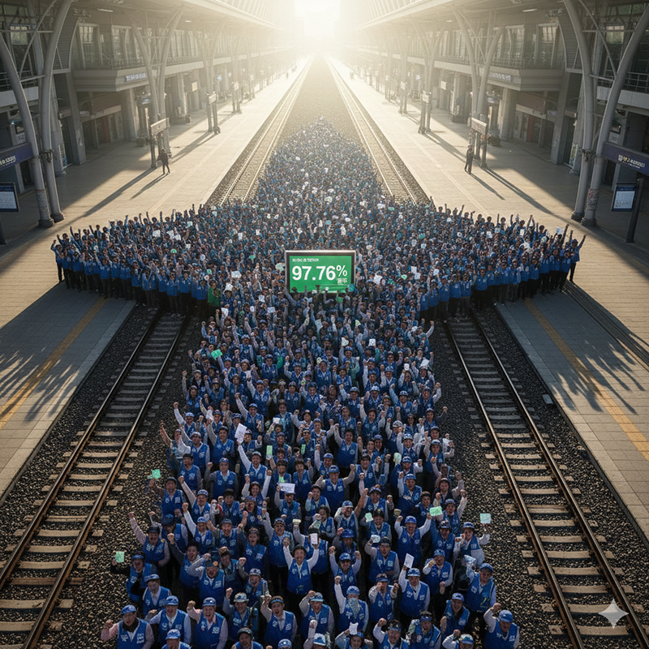

조합원 93.2% 참여, 97.76% 찬성으로 2025년 임금협약 최종 확정. 총파업 투쟁 태세 속에 성과급 정상화 합의 관철.
철도노조는 12월 30일 한국철도공사와 2025년 임금협약 체결식을 진행했다. 이번 임금협약은 12월 27일부터 29일까지 실시된 조합원 인준투표 결과, 전체 조합원의 93.2%가 참여하고 이 가운데 97.76%가 찬성함에 따라 최종 확정됐다.
이번 임금협약은 정부와 기획재정부의 반복된 입장 변화 속에서도 철도노조가 총파업을 불사한 투쟁 태세를 유지하며 성과급 정상화를 핵심 요구로 내걸어온 결과다. 철도노조는 성과급 차별 문제를 15년간 지속된 구조적 문제로 규정하고, 이를 바로잡기 위한 집중적인 교섭과 투쟁을 이어왔다.
지난 12월 10일 밤샘 교섭 끝에 노사는 임금교섭 잠정합의에 도달했으며, 이후 정부가 성과급 정상화 안건을 공공기관운영위원회에 상정하겠다고 약속하면서 파업을 유보했다. 그러나 이후 기획재정부의 입장 변화로 긴장이 다시 고조됐고, 철도노조는 12월 19일 긴급 확대쟁대위를 통해 총파업을 결의하며 압박 수위를 높였다.
이러한 과정 속에서 12월 23일 새벽 노사는 다시 잠정합의에 도달했고, 같은 날 오후 공공기관운영위원회는 철도공사 성과급 정상화 방안을 최종 의결했다. 합의안에는 2026년 성과급을 90% 기준으로 지급하되, 부족분 10%는 총인건비 외 방식으로 지급하고, 2027년부터는 100% 기준으로 지급한다는 내용이 담겼다.
철도노조는 23일 오후 전국 확대쟁대위를 열어 잠정합의안의 주요 내용과 인준투표 일정, 향후 투쟁 방향을 공유했다. 이후 진행된 인준투표에서 압도적인 찬성이 확인되며, 임금협약은 최종 확정됐다.
강철 위원장은 확대쟁대위와 이후 메시지를 통해 “이번 성과는 정부의 선의가 아니라, 조합원들이 총파업 태세로 단결해 만들어낸 결과”라며 “성과급 정상화와 고속철도 통합은 철도 공공성을 지키기 위한 투쟁의 결실”이라고 평가했다.
철도노조는 이번 임금협약 체결을 계기로 성과급 정상화를 넘어, 인력 충원과 안전한 철도, 기재부의 총인건비 통제 제도 개선 등 구조적인 과제 해결을 위한 투쟁을 이어간다는 방침이다.
목차로 돌아가기